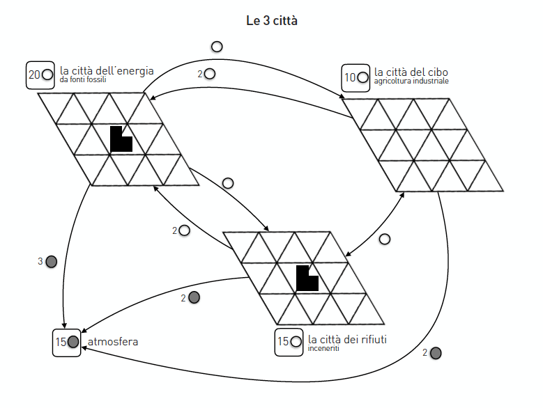
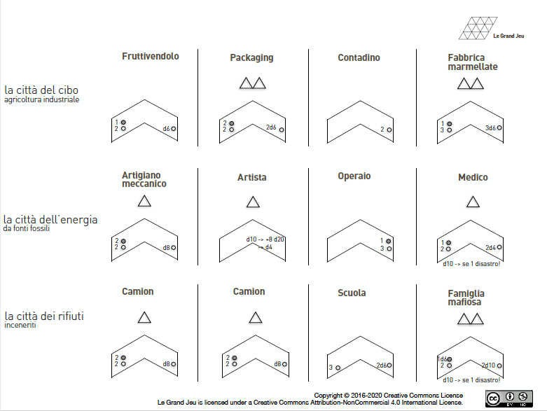
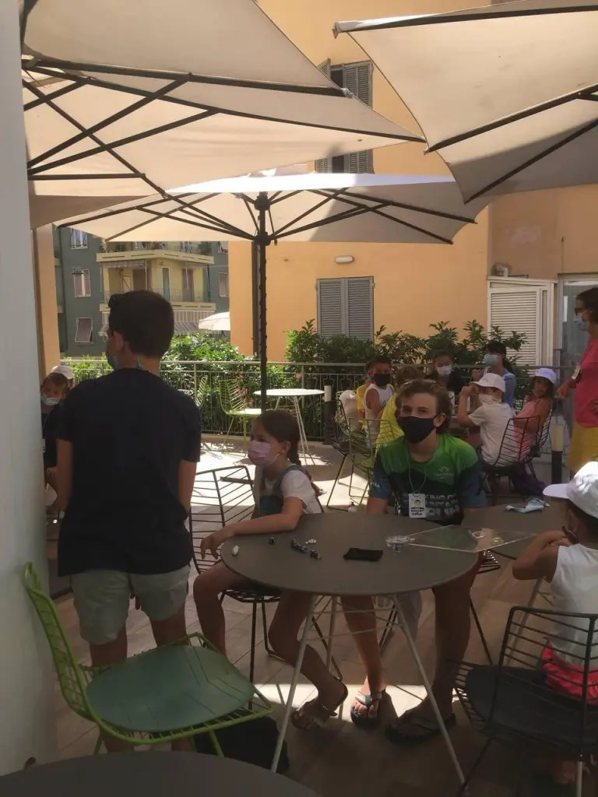

Chapter V
SOU: waste, energy, food — what 23 children
aged 7 to 12 built in three hours.
“Economy means the art of managing the home,
the place where we live together.” Closing circle, Alassio 2021
SOU is the Architecture School for Children at Farm Cultural Park. Its summer format, SOUper, opened its second meeting at Alassio with Le Grand Jeu, adapted for young hands and minds. The question driving the adaptation was old and unadorned: what does it mean to manage the home we share?
The word economy comes from the Greek oikos (house) and nomos (rule) — the rules of the house. For children who grow up assuming money is grown-up business, the etymology is itself a pedagogical act. The game recovers it.
The design brief
Three tables, three cities, one common logic. Listening, collaboration, sharing — and, together, learning through play. The facilitators wanted to see whether a very young table could use the triangles to think a whole system.

On a triangular grid platform — the city — players place small triangles (their land). On those triangles they build activities, shaped with their fingers. Each turn the activities produce or use whites and greys. Players choose to compete or to cooperate — but careful, situations change, and the city must be ready to react.


With very young players, the inventions are pedagogical as much as mechanical. These patterns emerged and have travelled into other SOU sessions and children-facing LGJ workshops since.
Three tables running in parallel — Waste, Energy, Food — each with identical rules but a focused starting condition. Children self-sort to the theme that pulls them. Cross-table exchange then becomes a structural invitation rather than a rule.
Mechanic: shared pieces, shared rules, different starting decks. Tables can trade mid-session.
Adults tend to describe their activities in words. Children shape them. The triangles become buildings, roads, and — more interestingly — processes: a folded triangle is a recycling plant; three overlapping triangles is a food market. The physical object carries the design.
Mechanic: no descriptions required. If you can shape it with the pieces, it exists on the board.
Within minutes, children began trading between Energy and Food, between Waste and Food. The thematic boundaries became prompts, not walls. The facilitators did not plan for it. The children invented the topology.
Mechanic: any player may walk to another table and propose a trade. Accepted trades count against both tables' flows.
With children, the master steps back. Set up well, then watch. The triangles do the explaining. Step in only to introduce a new event, or to slow down a table that is racing past its own discoveries.
Mechanic: facilitator interventions are budgeted, not free. Reserve them for the decisive moments.
No formal debrief; a seated circle and one question. Children speak one at a time, uninterrupted. The debrief does itself. A seven-year-old said at the closing, "we learned something about life."
Mechanic: after play, form a circle. One question. One pass around. No follow-ups.
Seated in the closing circle after almost three intense hours, the children said they had learned something about life — and about the etymology of economy: the art of managing the home, the place where we live together.